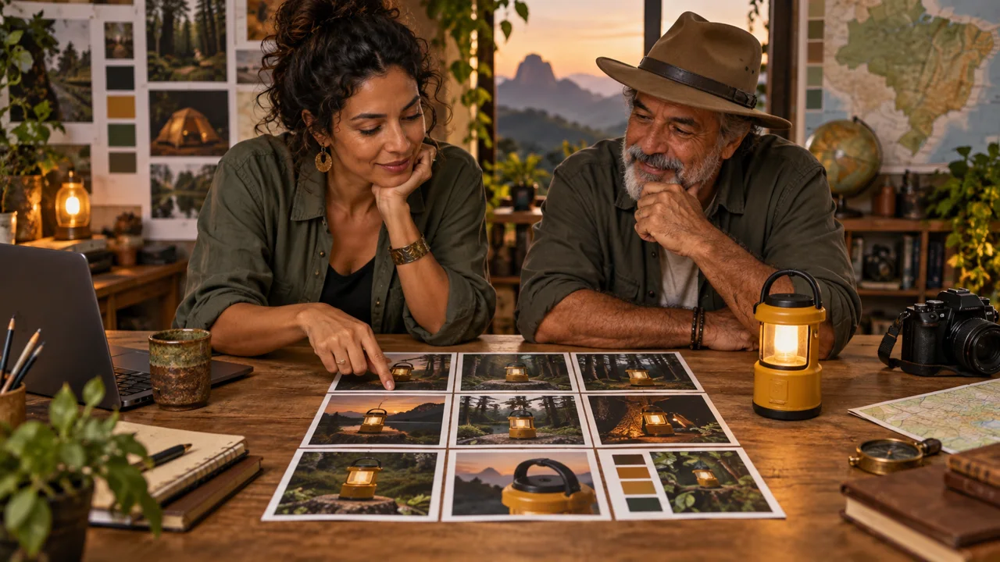

AI video · v6.2 · free course
One story, two visual languages
Turn references into visual decisions. Compare a 2D scene with a paper model, then make a short sequence in Cinema Studio.
start now →3 modules · 9 lessons · ~15 min guided reading · set aside 4–6 h for production, plus queues

What you will be able to do
How to study
Read in short sessions and do the practice in the suggested time. Progress stays in this browser. Make copies using the journey’s export option.
The lesson images are illustrations created in Codex, not video results. To finish production, you need access to Seedance and Cinema Studio with the relevant features. Check credits and features before you begin.
The Vagalume case
Lara, an art director, and Roberto, an innkeeper, present a yellow lantern in the forest. The story stays the same in two visual styles: 2D drawing and paper model.
Deliverables: two style tests and a Cinema Studio sequence. Short exercises organize or review steps; generation, corrections, and queues take extra time. Mark anything not yet produced as pending.
Prerequisite: you have already made a simple video. If needed, start with Your First AI Video.
Who it is for
It is for you if you
- You have made a simple video and want more control over tests.
- You have your own references and are willing to review results and costs.
- Prefer to learn by doing.
It is not for you if you
- Already know the subject well and want technical material.
- Want a traditional video lesson.